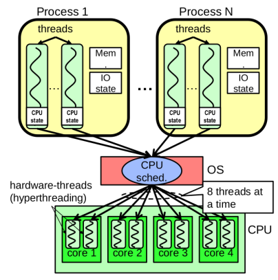

More Philosophy, and Threading What are the two basic approaches to parallelism? - Multiprogramming - running multiple independent programs in parallel - Easy - Parallel Computing - Run ONE program faster - Hard - In this class, we are mostly focused on the 2nd (Parallel Computing)
Most simple model, SISD (Single Instruction, Single Data Stream)¶

Sequential computer that exploits no parallelism in either the instruction or the data streams Examples of SISD arch. are the traditional uniprocessor machines - RISC-V processor - We consider superscalar as SISD b/c the programming model is sequential - A superscalar processor: Can fetch, decode, and execute multiple instructions per clock cycle. BUT: all of these instructions come from a single instruction stream (your program’s normal sequence of instructions). - Normal SISD: One chef making one dish at a time. - Superscalar SISD: One chef working on several dishes at once, but still following a single recipe (single instruction stream). SIMD would be like: One chef making several copies of the same dish at once (single instruction, multiple data). MIMD would be: Multiple chefs each following different recipes.
Single-Instruction / Multiple-Data Stream (SIMD)¶
SIMD computer processes multiple data streams using a single instruction stream, e.g, Intel SIMD Instruction extensions or NVIDIA GPU's

Multiple Instruction / Multiple-Data Stream (MIMD)¶

Multiple autonomous processors simultaneously executing different instructions on different data. - MIMD archs. include multicore and warehouse-scale computers - Huge amount of control logic

Problem Types¶
Sequential¶
A, then B We have a dependency The dependency is that B depends on A It does not matter how many processors you have, there is a dependency. A lot of Amdahl's law issues come from this Can't do A and B at the same time, cause you have to wait for A to finish before trying to do B
SIMD¶
SIMD is a very constrained type of parallelism For every A, do simple X The key features are that the operation is the same for every element in the group. There is a very limited control flow. - We can do conditional operations - AKA short if conditions - But we usually do X and Y for both and then select the answer: - Turning into a piece of *straight line cod
The Biggest SIMD Problem is...¶
The BIGGEST problem is dense Matrix multiply Image filtering, noise reduction Core operation in Deep learning What does it mean for a matrix to be dense? - This means that most of the entries are non-zero
MIMD¶
MIMD is far less constrained, for every A, we are gonna do {big complex thing} Can have branches, loops, many different things going on at once - EG, do one thing for A, a different thing for B, and a different thing for C The advantages of MIMD are that it's far more flexible Anything that is SIMD, can be done MIMD! The disadvantage however, is that it is far more expensive MIMD processors are dominated by control logic and SIMD processors are almost completely compute
Q: Would a web-server be a MIMD, or a SIMD problem? A: A web-server would be a MIMD problem, cause you have a bunch of web-requests coming from everywhere, from different things. You need flexibility that SIMD just doesn't offer / have the capability to.
The Canonical MIMD Problem¶
Sparse Matrix Multiply¶
This is the one used to benchmark supercomputers Most entries within the matrix are actually 0 - So far better to skip a whole bunch of multiplications: - 0 times a row is a row of 0's This is used for bigger simulation problems - Nuclear weapons, weather, etc..
GPU's vs CPU's!¶
When a GPU can be used, it is 50x more powerful than a general CPU When the problem works on the GPU, the GPU is vastly faster And when the performance is not limited by moving the problem into the GPU either
But... when does the GPU get used?¶
The GPU really only gets used for limited applications The CPU gets used all the damn time CPU >> GPU on sequential performance CPU >> GPU on parallel sequential tasks - Since the CPU has 12 cores, this allows 12 seperate sequential tasks to run at full speed
It comes down to branches!¶
SIMD Problem - For each A, do this straight line code MIMD Problem - For each A do this complex branching code The big differentiator is data dependent branches - SIMD cannot handle data dependent branches by going a certain way for A and another way for B
Throughput on it's own, is meaningless¶
Throughput is generally defined as: output per unit time Assuming that you have a task that is both parallel and scalable You can always throw more resources at it and make it run faster
EG, I can get the same throughput on a SIMD task with - 1 GPU - 500 CPUs We care about throughput / unit-cost!! - W, \(cm^3\), $ (moneyyy)
Performance VS. Efficiency Cores¶
For a modern CPU, it generally has multiple performance oriented processor cores - The main goals of these types of cores is to run a single stream of execution as fast as possible! - Some processors may support two streams of execution within a single core - i.e, AMD and Intel
CPU's also have multiple efficiency cores - These run slower but they have a simpler design as well as a slower clock rate. The energy used per operation is vastly slower.
Wait, parallelism can save energy?¶
Yes, parallelism can help save energy! If the parallel version performs the same total operations, running across many efficient cores can consume less power than running the sequential version on a single high-performance core. This is because lower clock speeds and more efficient cores reduce energy per operation. That’s why throughput per unit X (i.e, joule) is a better metric than just raw speed.
Parallelism doesn’t just improve speed, it can also reduce energy usage by spreading work across efficient, lower-power resources. We can use half the energy than usual.
Programs and Threads...¶
A program is a single unified memory space If you don't explicitly set up shared memory, each program has its own address space. We are able to run multiple copies of the same program. However, these copies do not share any of the data memory. If you do a write in one instance, that is not seen in any other instance (i.e, copy)
What's within a program¶
- At least one thread of execution
- A program counter: where in the program the current thread is
- The call stack: Local variables for the current thread's execution


Every single thread has it's own unique call-stack. They can read data out of each of there call stacks.
Different types of threads¶
- Hardware Thread: What the CPU itself supports
- Able to run one (or sometimes two), hardware threads per CPU core
- This is the number of tasks that the CPU can run at the same time
- Operating System (OS) thread: What the OS schedules
- The OS is responsible for mapping a (i.e, maybe even unlimited) number of OS threads, onto the running hardware
- Software Thread: What the program thinks of...
- Usually maps 1-1 with OS threads, but, we will see that we can have MANY more software threads than OS threads (i.e, software threads would be co-routines)

What is the use for threads?¶
Increasing performance by operating in parallel - Allows us to take a lot of advantage of the multiple processor cores - Ideally, you want the same number of threads as you have hardware threads Increasing performance by avoiding waiting - Do stuff while waiting for other stuff
What the hell is the problem with threads?¶
If two different threads are working on different things, there is no problem at all. If we have two threads that are reading the same thing, still, there is no problem However, here is where shit can go wrong, if one of the threads writes things We can get something called a race condition The way that weaver describes it, is that a program seems to not be deterministic Two memory access form a data race if different threads attempts to access the same location, and at least one is a write, and they occur one after another If there is a data race, the result of the program vary's heavily and depends on chance We avoid data races by synchronizing writing and reading so that we can get deterministic behavior Synchronization done by user-level routines that rely on hardware synchronization instructions
Analogy: Buying Beer in the after times...¶
Your fridge has no beer. You and your roommate will return from classes at some point and check the fridge
Whoever gets home first will check the fridge, go and buy beer, and return
What if the other person gets back while the first person is buying beer? Dude, you just bought TWICE the amount of beer that you need! UGH!
It would have been helpful if someone left a note that they went to go buy more beer...